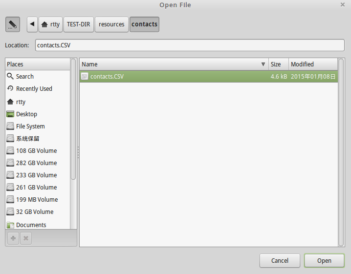
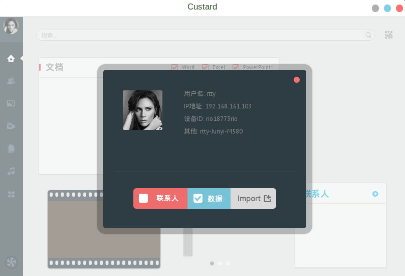
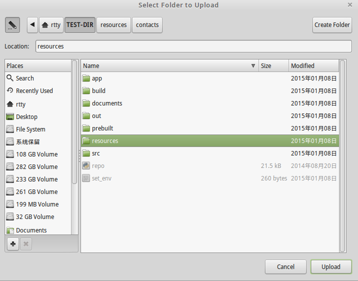
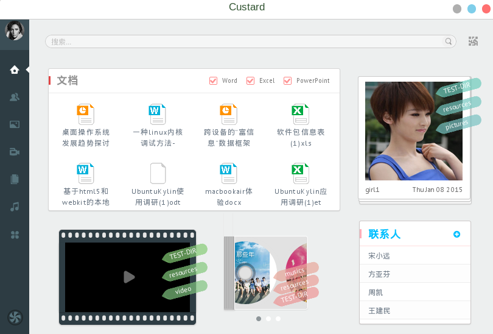

数据管理器为新型桌面提供了统一的数据管理功能，有效的管理系统中的文档、图片、视频等各类型文件。同时也提出了一种新型数据管理模式——标签管理，相对于传统的文件夹式数据管理，更能方便用户索引想要的数据。下面是数据管理器的使用方法。
在数据管理器中，点击左上角的美女图片，打开数据管理器的数据导入界面，勾选“联系人”，然后点击Import导入，选择对应的CSV联系人文件，如下图所示：
点击确定，即可导入联系人数据。同理，在导入界面中勾选“数据”复选框，然后导入对应的图片和视频文件：
 导入成功后，数据管理器的界面如下：
这是数据管理器的主界面，在上半部分显示的是文档和图片类常用文件，在下半部分显示视频、音乐专辑和联系人的概要信息。